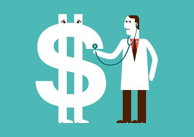

Health Care Costs Associated with Being Overweight/Obese
It is common knowledge that being overweight affects our health. Being
overweight increases the risk of cobmorbidities such as high blood
pressure, high cholesterol, diabetes, and heart disease. Have you ever
thought about how much poor physical health affects your wallet? In
addition to obesity affecting quality of life, it is also one of the
number one prevantable health care costs in the United States "ranging
from $150 billion to $190 billion annually (Dufour, 2018)." Below are some
statistics that show just how much obesity costs.
Did You Know?

• "Obese men accumulate an additional $1,152 per year in medical
spending, while obese women account for an extra $3,615 per year." (Dufour, 2018)
• "It has been concluded that, over the course of a
lifetime, per-person costs for obesity were similar to those for
smoking." (Harvard University, 2016)